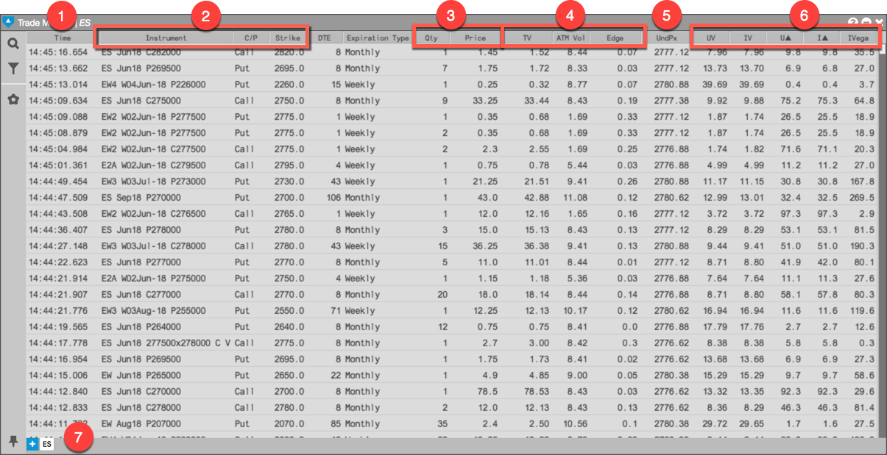
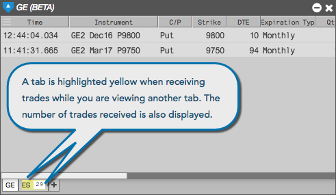

TT’s Options Trade Monitor display consists of the following:

When using multiple tabs, the tab(s) you are not viewing will be highlighted yellow to indicate when new trades have been received. This tab will also display the number of new trades received since you last viewed the product on that tab.
